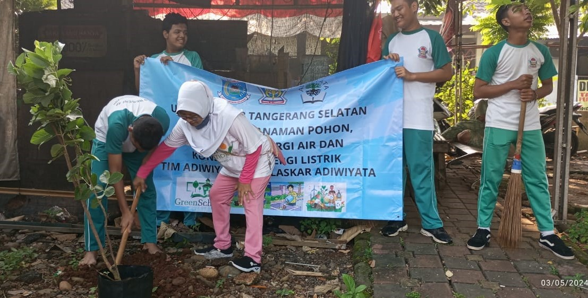

Memperingati Hari Menanam Pohon Indonesia
Siswa SMPN 18 Kota Tangerang Selatan memperingati Hari Menanam Pohon Indonesia dengan melakukan penanaman di daerah sekolah dan lingkungan sekitar sekolah.
Manfaat Penghijauan yaitu mengurangi polusi, mengurangi partikel debu, pendidikan Lingkungan di Sekolah, Sarana Pembelajaran, Lingkungan sekolah menjadi asri, Sebagai penghasil oksigen, Lingkungan sekolah menjadi lebuh sejuk, Menambah persediaan air bagi komponen abiotik. Penghijauan sangat penting bagi sekolah, selain menyejukkan udara disekitarnya, dapat pula memperindah pemandangan. Penghijauan tidak hanya menanam pohon, dengan membersihkan setiap ruangan dan lingkungan sekitar sekolah, serta membuang sampah pada tempatnya juga termasuk penghijauan.